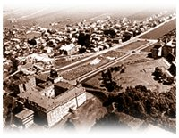

|
|

STE-ANNE-DE-LA-POCATIÈRE

|
En 1678, une paroisse sous le
nom de La Combe est érigée sur la rive sud du Saint-Laurent par
le monseigneur de Laval. Celle-ci change son nom pour celui
de Grande Anse ou Sainte-Anne-de-la-Grande-Anse et le conserve
jusqu'en 1721. L'identification présente de la municipalité,
créée en 1845 et dont La Pocatière s'est détachée en 1960, provient
en partie de la seigneurie La Pocatière.
Le paysage pocatièrain se caractérise par la présence de
lambeaux issus d'une ancienne surface appalachienne déchiquetée par l'érosion,
ce qui donne un relief un peu désordonné. Cette paroisse possède,
entre autres, une très ancienne école d'agriculture (1852) dotée
d'une station de recherche.
|
|

Le Collège de
Sainte-Anne-de-la-Pocatière, fondé
en 1827 par l'abbé Charles-François Painchaud, a été la
première institution d'enseignement secondaire à voir le jour à l'est
de Québec.
|


|